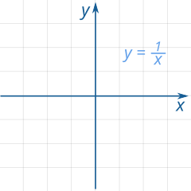

Reciprocal Function
This is the Reciprocal Function:
f(x) = 1/x
This is its graph:

f(x) = 1/x
It is a Hyperbola
It is an odd function
Its Domain is the Real Numbers, except 0, because 1/0 is undefined.
Using set-builder notation:
Its Domain is {x | x ≠ 0}
Its Range is also {x | x ≠ 0}
Asymptotes
Let's see what happens to 1/x as x changes:
- As x gets larger (10, 100, 1,000...) 1/x gets closer to 0 (0.1, 0.01, 0.001...)
- As x gets closer to 0 (0.1, 0.01, 0.001...) 1/x gets larger (10, 100, 1,000...)
This creates very special lines on our graph called asymptotes.
An asymptote is a line that a curve approaches but never quite touches.
Notice that the graph gets closer and closer to the x-axis (y=0) as x gets very large or very small. This is called a Horizontal Asymptote.
Also, the graph gets closer and closer to the y-axis (x=0) as x gets closer to 0. This is called a Vertical Asymptote.
As an Exponent
The Reciprocal Function can also be written as an exponent :
f(x) = x-1
(it means the same thing)